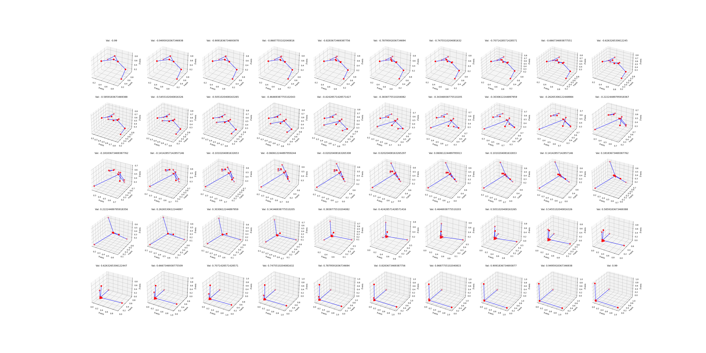

Introduction
Imagine a time you want to interpolate between two graphs. Graphs are 1D manifolds homeomorphism to a line segment. One way that can be used for interpolating two graphs is to know the maximum number of vertices of each and a matrix of (a stack of) vertex adjacency of them. I've been thinking about it for a while and to me the most ideal case is when line segments are smoothly generated, rotated, and shrinked (and vanished) until they transform a graph into another with different topology and such.
Doing the mentioned manipulations on graphs is so ideal that needs so much rule definitions and considerations, but using Neural nets--even a very small one--can help a lot in this case. So, on this weekend I dealt with it and my findings suggest an easy fully connected AutoEncoder network. Such network can be used and offer an interpolation between graphs and also capable of offering more beyond these two graphs.
For checking the codes, just go and check the code at my github page at link. I put one free parameter as the latent code for acting like knob to change graphs. I made it in a way to offer the first shape at -0.9 and the second at 0.9 and other interpolated or extrapolated graphs with other selection of this parameter.

Limiations
As it might be guessed, such network works well on small graphs. For large graphs or for interpolation between a small and large graphs, such Autoencoder cannot be reliable. This issue is inevitably troublesome since the network should deal with a large array of zero inputs which gives so much inputs to the network at point zero and unbalance the input variations. The other thing I noticed is the fact that the connectivity of graphs (betti numbers) are not guaranteed to remain the same when we change the latent parameters. Also, at the end of training, one might need to make a post-processing step to merge points at their close neighborhood into one single points to reduce the number of points.